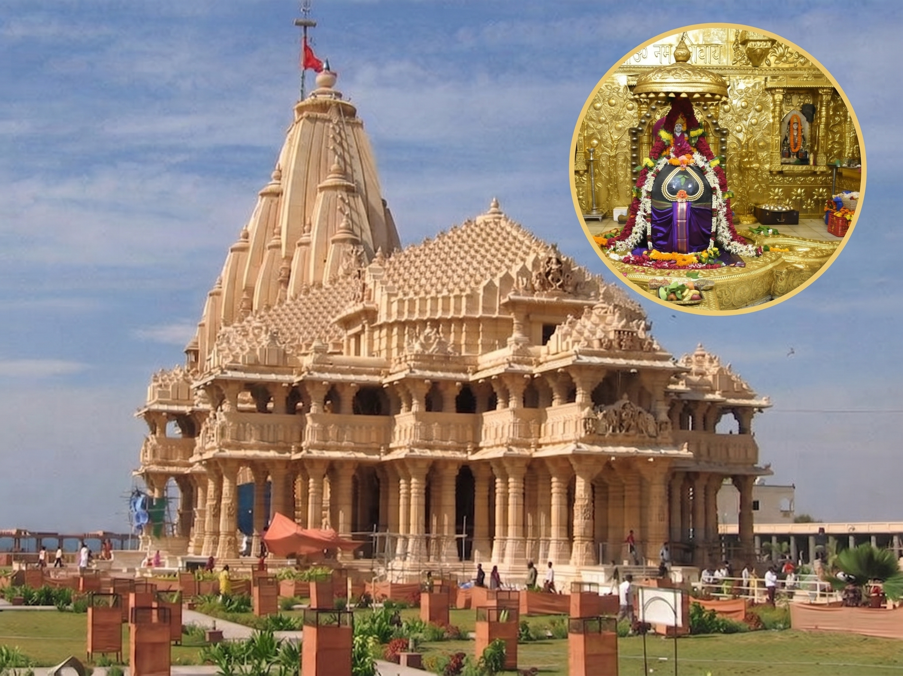
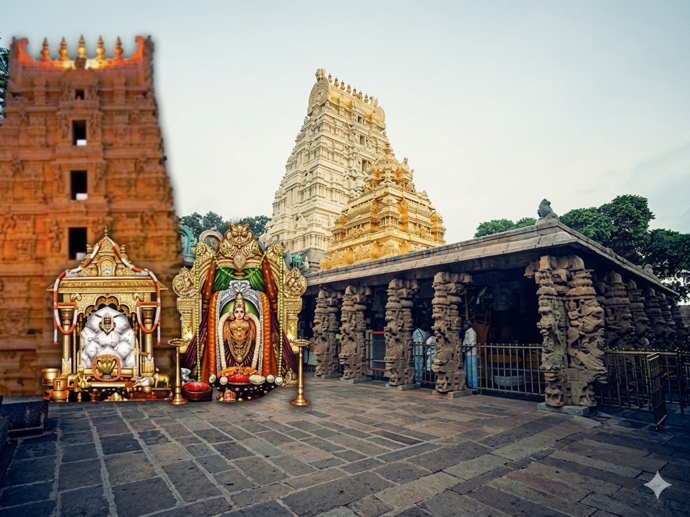
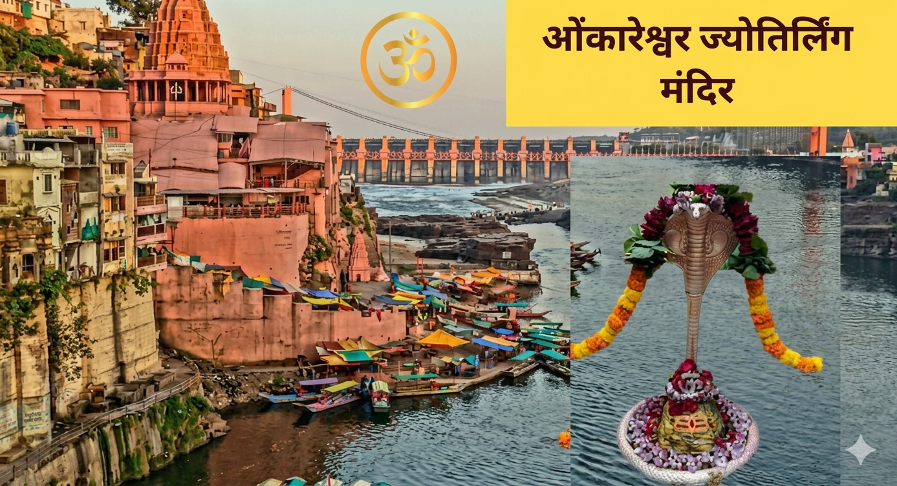
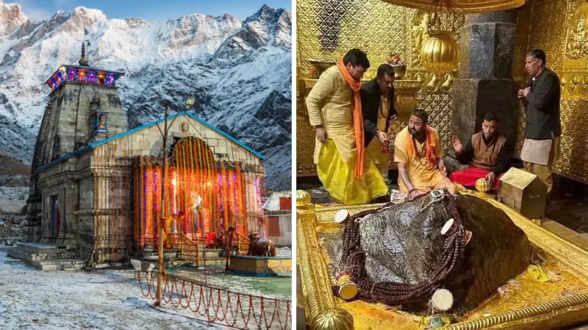
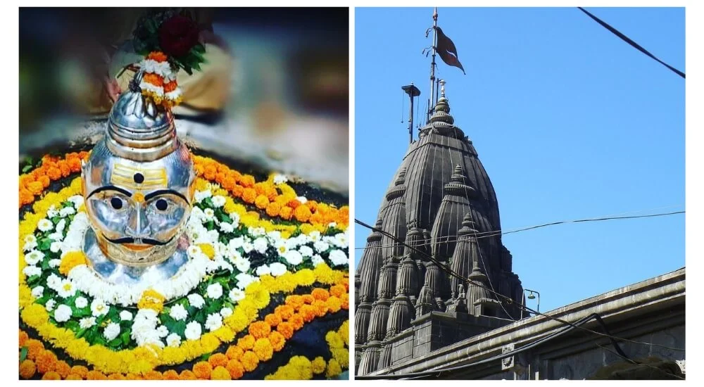
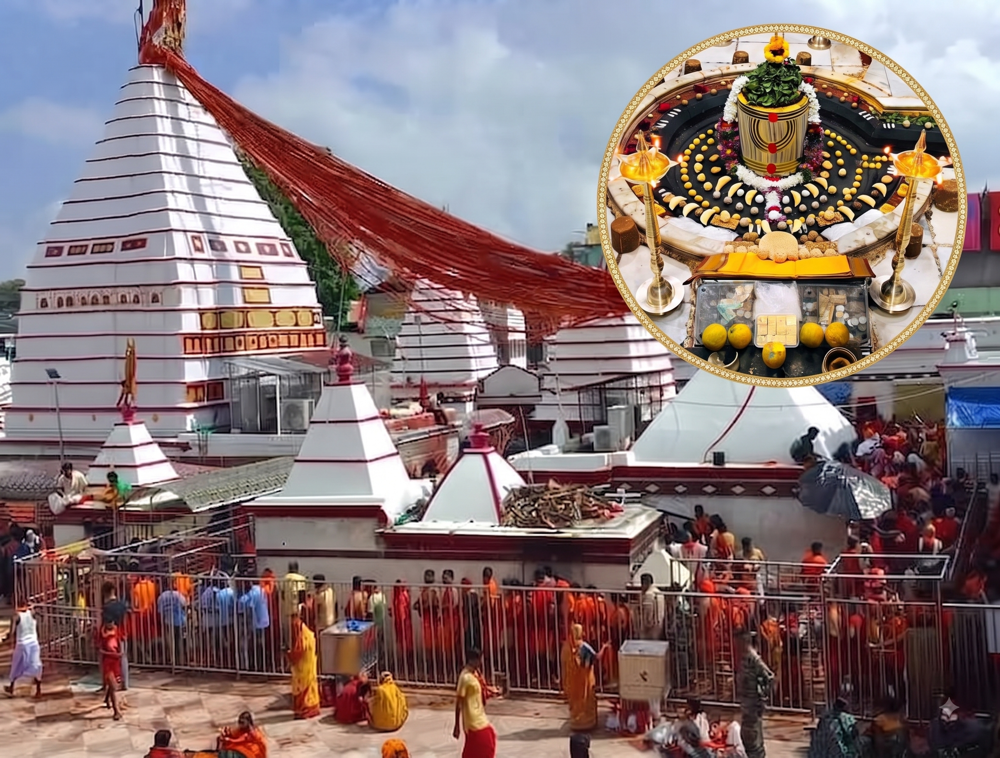
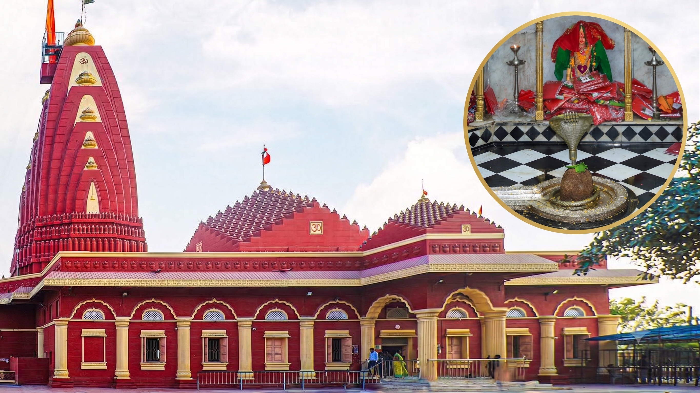
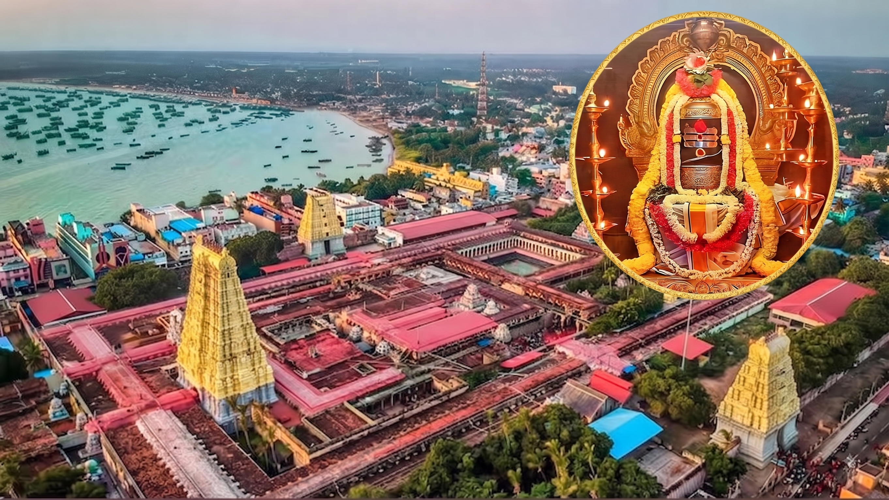
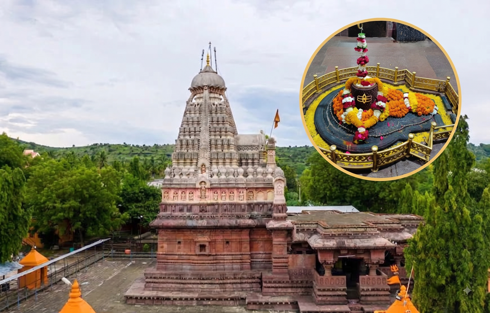

LIST OF 12 DWADASHA JYOTIRLINGA SHIVA TEMPLE
 Scroll to explore more
Scroll to explore more












1. Somnath Temple - Somnath
The Somnath temple located in Prabhas Patan in Gujarat, India is first among the twelve jyotirlinga shrines of Shiva.
It is an important pilgrimage and tourist spot in Gujarat. Destroyed and rebuilt several times in history, the present temple was reconstructed in Chaulukya style.
One of the oldest temples in India, which was rebuilt 16 times. The temple is famous for its beautiful design and rich history.
As per Shivpurana, the moon god Chandra (Somnath) once prayed to Lord Shiva to remove a curse given by his father-in-law, Daksha. Lord Shiva was happy with Chandra’s prayers and appeared as a Jyotirlinga to free him from the curse.
The Somnath-Prabhasa tirtha has been one of the revered tirtha (pilgrimage) site for the Hindus. It is the famed Prabhasa site found in Brahmi script inscriptions in Maharashtra sites. It is mentioned in the poems of Kalidasa.
The stunning architecture of the Somnath Temple has been reconstructed many times but still serves as a symbol of great faith and devotion among Hindu worshippers.
People visiting the temple can offer prayers and aartis three times a day - in the morning, afternoon and evening.
The temple lies close to the Arabian Sea and offers a mesmerising view to its visitors and devotees. The name of the temple is also mentioned in sacred books such as Shrimad Bhagwat Gita, Skanda Purana, Shiva Purana and Rig Vedas.
Temple Timings: 06:00 AM to 10:00 PM
How to Reach?
Nearest Airport: Keshod Airport
Nearest Railway Station: Veraval Railway Station
Special Attraction: The light and sound show ‘Joy Somnath’ every evening from 8 PM to 9 PM can be enjoyed by the visitors. Tickets cost ₹30 for adults and ₹10 for children under 10 years old.
Nearby Attractions: Bhalka Tirth, Triveni Sangam, Gir National Park, and Diu Island.
2. Mallikarjuna- Srisailam
Srisailam Mallikarjuna is located in the beautiful Nallamala hills. It is an important pilgrimage place for devotees of Lord Shiva and Goddess Parvati. This temple is also believed to be one of the 18 Maha Shakti Peethas, special temples for worshipping Shakti (the goddess).
According to legends, Lord Shiva and Goddess Parvati came here in the forms of Mallikarjuna (Shiva) and Bhramaramba (Parvati) to stay close to their son, Kartikeya.
Mallikarjuna Jyotirlinga stands as a testament to ancient Indian temple architecture because of its intricate carvings along with being a centre of great Shaivite shrines in India.
History and Spiritual Significance of Mallikarjuna Jyotirlinga Temple
The roots of the temple trace back to the time of King Harihara Raya of Vijayanagar. Several rulers and kings such as Ikshvakus, Pallavas, Chalukyas, and Reddis contributed to the construction and maintenance of the structure. Chhatrapati Shivaji was also involved in the restoration of shrines.
According to the Shiva Purana, this sacred spot on Krauncha Mountain became home to a Jyotirlinga when Lord Shiva and Goddess Parvati appeared here to satisfy their son Kartikeya.
Kartikeya was upset because his younger brother, Lord Ganesh, had married before him. Another legend claims that on a moonless night, Lord Shiva arrived here as Arjuna, while on a night with a full moon, Goddess Parvati appeared as Mallika. As a result, the location became known as Mallikarjuna.
Temple Timings: 04:30 AM to 10:00 PM
How to Reach?
Nearest Airport: Rajiv Gandhi International Airport
Nearest Railway Station: Markapur Road Railway Station
Special Attraction: Visitors can enjoy the Jathra Mahotsavam in the month of March every year.
The only temple of Shiva where devotees are allowed to touch the Jyotirlinga called Sparsa Darshanam.
Srisailam has many other names like Srigiri, Sirigiri, Sriparvatam and Srinagam.
3. Mahakaleshwar - Ujjain
Mahakaleshwar Jyotirlinga which is situated on the banks of Rudra Sagar Lake in the historic city of Ujjain in Madhya Pradesh is among the 12 most auspicious Jyotirlingas of India that is devoted to Lord Shiva.
Pilgrims visit the Mahakaleshwar Jyotirlinga not only to offer prayers but also to get mesmerised by the exquisite and ancient style carving on the temple structure.
From far-off places tourists and historians come to witness the spiritual hub of Mahakaleshwar. The Jyotirlinga is a self-originated structure and the temple showcases the architectural styles of Maratha, Bhumija and Chalukya.
The temple is a five-level structure and each level houses different forms of Shiva naming the Omkareshwara Linga, Nagchandreshwar Linga, Sidhnath, Gupteshwar and Dhwajeshwar and Mahakaleshwar Jyotirlinga along with the images of Goddess Parvati, Ganesha, Kartikey and Nandi.
History and Spiritual Significance of Mahakaleshwar Jyotirlinga Temple
The Mahakaleshwar Temple dates back to the fourth century BC, as mentioned in the Matsya Purana and Avanti Khanda. The temple was adored even throughout the Mauryan, Sunga and Gupta kingdoms. The Paramara dynasty in the 11th century was behind the temple's development and significance.
However, despite many hurdles, the temple maintained its holiness and served as a place of devotion.
The Mahakaleshwar Jyotirlinga is mentioned in many ancient texts and chanting mantras which signify the spiritual culture and traditions of India.
According to a legend, once Lord Shiva visited Earth to defeat a demon named Dushana he was making life miserable for sages and villagers. After defeating the demon, Lord Shiva appeared in the form of Mahakaleshwar Jyotirlinga, choosing to live in this holy city and shower his heavenly blessings ever since.
Temple Timings: 3:00 AM to 11:00 PM
How to Reach?
Nearest Airport: Devi Ahilya Bai Holkar Airport
Nearest Railway Station: Ujjain Junction
Special Attraction: The ritual of Bhasma Aarti is performed at the time of dawn when the Shivling is bathed in ashes taken from the funeral pyre which draws millions of devotees, especially in the month of Sawan and Nag Panchami.
4. Omkareshwar - Madhya Pradesh
Omkareshwar Jyotirlinga is the fourth Jyotirlinga dedicated to the Lord and is located in the exquisite setting of Mandhata Island surrounded by the Narmada River in Madhya Pradesh.
The river amplifies the beauty of the temple and attracts lakhs of pilgrims every year.
A huge flock of tourists and devotees visit the Omkareshwar Jyotirlinga especially during the festivals of Shivratri and Kartik Poornima to offer prayers and dive into the spirituality of the environment.
The Jyotirlinga here brings out the charm of the Omkareshwar and Mamleshwar temples. The Mamleshwar temple and the Omkareshwar are separated by each other through a slim ridge.
Hindu mythological books depict that the island where the Jyotirlinga lies is in the shape of the sacred symbol ‘OM’.
History and Spiritual Significance of Omkareshwar Jyotirlinga Temple
The Omkareshwar Temple has a long history that is well documented in historical records. Many Puranas indicate the temple, discussing its significance and origins.
Historians think the temple was built in the eleventh century by the Paramara Kings of Malwa. Omkareshwar was brutally destroyed by Muslim invaders in the 13th century.
Later, in the nineteenth century, Holkar rulers (primarily Rani Ahalya Bai Holkar) reconstructed and repaired the temple to its current state.
Many legendary stories and tales are associated with the Omkareshwar Jyotirlinga in Hindu mythology. According to one tale, 'Vindhya Parbat' performs devotion to satisfy Lord Shiva where Lord Shiva was pleased and granted Vindhya's aspiration to be larger than 'Meru Parbat'.
The Linga that was worshipped by Vindhya Parbat was finally separated into two sections, 'Omkareshwar' and 'Mamleshwar', as requested by the gods and sages, symbolising the Shiva Lingam's wholeness.
Another legend tells how King Mandhata and his sons pleased Lord Shiva through their mediation and Lord Shiva appeared in the form of Jyotirlinga.
Some other tale describes how in a tremendous battle between the Devas and Asuras, Lord Shiva emerges as Omkareshwar.
Temple Timings: 05:00 AM to 10:00 PM
How to Reach?
Nearest Airport: Devi Ahilya Bai Holkar Airport
Nearest Railway Station: Ujjain Junction
Special Attraction: Every year at the time of the Maha Shivratri festival, a great carnival is organised along with a huge feast for the devotees.
5. Kedarnath Temple - Uttarakhand
Kedarnath Jyotirlinga is the most significant temple among the temples of Chardham Yatra and the highest among the 12 Jyotirlingas of Lord Shiva, situated in Uttarakhand’s Rudraprayag region at an elevation of 3,584 metres.
Kedarnath Temple is a Hindu temple dedicated to Lord Shiva. Located near the Mandakini river, Uttarakhand.
Due to extreme weather conditions, the temple is open to the general public only between the months of April and November.
The Kedarnath Dham is surrounded by snowy mountains and the river Mandakini flows in close proximity to the temple. Visiting the Jyotirlinga in the Himalayas will make one experience a sense of spirituality and peace in the environment there.
The temple not only attracts pilgrims for its religious significance but also offers wonderful views of the mountainous ranges.
The challenging route, harsh climate and high altitude make the pilgrimage tour a significant journey towards Lord Shiva.
History and Spiritual Significance of Kedarnath Jyotirlinga Temple
The history of the temple of Kedarnath dates back to the 8th century when a great philosopher "Adi Shankaracharya" is believed to have built the temple.
He popularised the Hindu religion in the country by introducing the Chardham Yatra among the citizens.
Another legend has it that the Pandavas built it when they went towards the Himalayas to get rid of their sins to attain salvation and perform penance to Lord Shiva.
Temple Timings: 04:00 AM to 09:00 PM
How to Reach?
Nearest Airport: Jolly Grant Airport
Nearest Railway Station: Rishikesh/Haridwar Railway Station
Special Attraction: It’s very surprising to witness that the aarti mantras are recited in the Kannada language in the temple.
6. Bhimashankar - Maharashtra
In the verdant Western Ghats of Maharashtra lies the sacred destination of Bhimashankar Jyotirlinga which showcases the perfect blend of spirituality and natural beauty.
The Jyotirlinga is located close to the Bhima River which is the largest tributary of the Krishna River and is surrounded by the hills of the Sahyadri Range.
Bhimashankar Jyotirlinga is among the twelve Jyotirlinga Shrines of Shiva which displays its rich culture and significance through its architectural wonder, the well-crafted Nagara style craftsmanship is a great reason for its attraction.
The temple region is also a paradise for nature lovers and wildlife enthusiasts because of its recognised wildlife sanctuary that offers a peaceful and divine experience to visitors.
History and Spiritual Significance of Bhimashankar Jyotirlinga Temple
The temple is referenced in various ancient books, including the Shiva Purana, and its origins can be traced back to history.
The structure of the temples expanded over the years, with several dynasties and emperors, notably the Chalukya and Maratha, contributing to its construction.
The old legends and tales speak of Bhimashankar Jyotirlinga’s history where Lord Shiva appeared in the ‘Rudra’ form to defeat the demon Tripurasura.
The demon was a great threat to the three realms of the universe: Heaven (Swarglok), Earth (Bhulok) and Netherworld (Patalok) as it was destroying everything that was in his way.
Lord Shiva after defeating the demon rested on the Sahyadri Mountains and while resting, the sweat released from his body formed the Bhima River.
The Gods and Goddesses asked Shiva to live here in these mountains in the form of Jyotirlinga which became a divine site of Bhimashankar Jyotirlinga.
The Firefly Festival is held every year before the monsoon, where thousands of fireflies can be seen lighting up the village.
Temple Timings: 05:00 AM to 09:30 PM
How to Reach?
Nearest Airport: Pune International Airport
Nearest Railway Station: Karjat Junction
Special Attraction: The wildlife sanctuary is a major site for witnessing the wild and the area is also dotted with other religious destinations like the Gupt Bhimashankar, the Hanuman Lake and many more.
Mahashivratri is a very important day for worship.
7. Kashi Vishwanath - Varanasi, UP
In the sacred city of Varanasi, Kashi Vishwanath Jyotirlinga is among the Dwadasa Jyotirlinga which is located close to the banks of the Ganga River and captures the attention of millions of pilgrims to offer their prayers and seek blessings from Lord Shiva.
The temple of Kashi Vishwanath is also known as the ‘Golden Temple of Varanasi’ because of its gold-plated dome.
The Kashi Vishwanath beautifully represents the cycle of life and death.
While wandering through the narrow lanes around the temple, visitors can hear the songs of the bells ringing, the view of the holy aartis and the feel of spirituality that will fill their hearts with wholesome divinity.
The Kashi Vishwanath Temple has been a source of spiritual inspiration for many saints and sages.
History and Spiritual Significance of Kashi Vishwanath Jyotirlinga Temple
The history of the Kashi Vishwanath Jyotirlinga temple dates back to around 2500 years ago as it is believed that the temple was built by King Vikramaditya.
The temple also occurs in the Kasha Kandra, an ancient document that the temple might be as old as the sixth century. The temple is even mentioned in several holy books of Hindus.
The legendary story that is associated with the Jyotirlinga is that Lord Shiva presented himself as a beam of a huge pillar to solve the problem between Lord Brahma and Lord Vishnu where they would need to find the ends of the pillar to become the supreme power.
No one succeeded in finding the ends of the pillar but Lord Brahma lied about the fact and made Shiva curse him to be not worshipped by anyone and gave the title of supremacy to Lord Vishnu.
After the huge pillar disappeared from the three realms, a small portion of it remained here and became the Vishwanath Jyotirlinga.
Temple Timings: 03:00 AM to 11:00 PM
How to Reach?
Nearest Airport: Lal Bahadur Shastri International Airport
Nearest Railway Station: Varanasi Junction
Special Attraction: People believe that while looking at the golden spire if one asks for a wish, it gets fulfilled.
Also, it is believed that if a person lives or dies here will attain moksha.
8. Trimbakeshwar - Nashik, Maharashtra
Trimbakeshwar Jyotirlinga is captivated by the majestic mountains of Brahmagiri mountains in Nasik, Maharashtra dedicated to Lord Shiva.
The sacred River Godavari near the temple is induced with a spiritual aura which offers tranquil views to the visitors.
The Jyotirlinga has a huge significance among the pilgrims visiting the temple because it houses the lingam with three faces that represent Lord Shiva, Lord Brahma and Lord Vishnu. The Trimbakeshwar Jyotirlinga is among the popular Hindu temples in India because of its unique lingam and exquisite architecture.
History and Spiritual Significance of the Temple
The temple history of Trimbakeshwar says that the temple was originally constructed by Nana Saheb Peshwa, a Maratha ruler during the 18th century which amplifies the beauty and architectural greatness of the structure along with connecting its ties with the Hindu legends and texts.
The temple's history also has a connection with the Kumbh Mela, a significant event held in the holy city of Nashik every 12 years.
Many legendary tales are associated with Trimbakeshwar Jyotirlinga Temple, one such is where sage Gautam accidentally became the reason behind the death of a cow during his refuge in the Brahmagiri Hills.
To get rid of his sin, he started worshipping Lord Shiva near the banks of the River Ganga to purify his soul.
The water poured down as the Godavari, seeing this act of divine intervention, the gods praised Lord Shiva and begged him to reside here as the Trimbakeshwar Jyotirlinga.
The holy pond where the Godavari originated in the temple premises is called Kushavarta. Another legendary tale speaks of Trimbakeshwar Jyotirlinga’s history where Lord Shiva appeared in the form of three lingas representing Brahma, Vishnu and Mahesh (Shiva).
Temple Timings: 05:30 AM to 09:00 PM
How to Reach?
Nearest Airport:Nashik Airport
Nearest Railway Station: Nashik Road Railway Station
Special Attraction: The uniqueness of the Jyotirlinga is its three faced linga that attracts millions of devotees from all over the world.
Pilgrims take a holy dip at ‘Kushavarta’, the birthplace of River Godavari.
9. Vaidyanath - Jharkhand
In the Jharkhand state of India lies the Baidyanath (Vaidyanath) Jyotirlinga which is believed to be one of the popular Lord Shiva temples in India because of its grand structure and religious significance among pilgrims.
The Vaidyanath Jyotirlinga also called Baba Baidyanath Jyotirlinga which is located in the Deoghar district of Jharkhand, annually hosts the ‘Shravan Mela’ which attracts millions of devotees to offer holy water on the Shiv Linga to showcase their deep devotion towards him.
The temple's sacred presence, together with Deoghar's peaceful surroundings, provides a place for spiritual refreshment for both devotees and tourists.
Pilgrims visiting the Jyotirlinga of Vaidyanath highly believe that praying at this temple will bring health and wealth upon them.
History and Spiritual Significance of the Temple
The history of the temple goes back to the time of the last Gupta emperor, Adityasena Gupta of the 8th century AD. The temple maintained its importance even during the Mughal era of India.
One of the most fascinating tales is associated with the Baba Baidyanath Jyotirlinga where the demon king, Ravana chopped down his 9 heads to win Lord Shiva’s attention.
Shiva appeared in front of Ravana as a healer (Vaidya) and joined the heads to his body again which gave the name to the place as Baidyanath Dham.
Another tale where Ravana asked Lord Shiva to make Lanka his home and gave him a linga in exchange. However, during his journey, Ravana was asked not to keep the lingam down.
The gods started wondering and asked Varuna Dev to break his journey. Lord Varuna tricked Ravana by making him thirsty and appeared as a Brahmin to help him with the lingam. As Ravana went to comfort himself, Lord Vishnu laid the linga on the ground and disappeared.
When Ravana returned, he discovered the linga which was anchored to the earth and couldn't move it. He understood that he was tricked and later bowed to it, which is now believed to be Deoghar.
Temple Timings: 04:00 AM to 09:00 PM
How to Reach?
Nearest Airport:Atal Bihari Vajpayee International Airport
Nearest Railway Station: Jasidih Junction
Special Attraction: ‘Shravan Mela’ is annually hosted in the region which attracts lakhs of devotees for ‘Kanwar Yatra’ from different parts of the country.
10. Nageshwar - Gujarat
In the western region of India lies the Nageshwar Jyotirlinga in Gujarat which is dedicated to Lord Shiva. The name of the temple ‘Nageshwar’ means ‘Lord of Snakes’ which honours Shiva's victory over the demon Daruka.
People believe that the Jyotirlinga has the power to protect from all kinds of poisons, especially snake poisons and the reference is also mentioned in the Sacred Rudra Samhita.
The devotees are permitted to enter the sanctorum and conduct abhishek on the linga alongside the local priest, but only in traditional clothing. The site of the temple has a massive statue of a seated Shiva that can be viewed from a distance.
Inside the temple, the Shiva’s structure is a symbol of peace and faith for the pilgrims. People visiting the temple of Nageshwar Jyotirlinga get to experience a peaceful environment and spiritual enlightenment.
History and spiritual significance of the Temple
The history of Nageshwar Temple has roots that trace back thousands of years and the current structure of the temple is quite modern as it has undergone many renovations.
The current temple stands exactly at the same point where the previous temple used to be, as people believe the old temple is submerged underwater.
Many tales and legendary stories are associated with the temple, one among them is mentioned in the Shiv Purana which tells the story of the demon named Daruka who was blessed by the boons of Goddess Parvati.
Daruka misused the power to make the local villagers fear him and also imprisoned a devoted follower of Shiva, Supriya along with others.
The followers of Shiva started praying to save them from this torture which made Daruka enraged. The demon went to harm Supriya but Lord Shiva appeared as a Jyotirlinga to act as a shield for everyone which is presently the Nageshwar Jyotirlinga today.
Temple Timings: 05:00 AM to 09:00 PM
How to Reach?
Nearest Airport: Jamnagar Airport
Nearest Railway Station: Dwarka Junction
Special Attraction: Hindu pilgrims can conduct pujas and Abhishek inside the temple beside the priest only in traditional attire.
11. Rameshwaram - Tamil Nadu
The Ramanathaswamy Temple in Tamil Nadu houses the Rameshwaram Jyotirlinga which is a part of the Bada Chardham Yatra for Hindus along the 12 Jyotirlingas of India.
The Jyotirlinga of Rameshwaram lies on the Pamban island of Tamil Nadu and people need to cross the Pamban bridge to reach the temple. Rameshwaram Temple has great significance among its devotees as it is a perfect example of belief, mythology and architecture.
Both the Jyotirlinga Shrines of Ramalingam and Vishvalingam are placed side by side inside the sanctum where the idol of Vishvalingam is worshipped before the Ramalingam.
The Ramanathaswamy Temple in the south represents Lord Rama's unbreakable devotion to Lord Shiva, as evidenced in its name, which means 'Master of Rama'.
Other deities like 'Lord Vinayaka', 'Lord Subrahmanya', and 'Parvathavardhini' also grace the temple.
The temple surrounds many other significant sites such as ‘Agnitheertham’, ‘Gandhamadhana Parvatham Temple’, ‘Panchmukhi Hanuman Temple’ and ‘Rama Setu’ among others.
No Hindu’s journey is complete without a pilgrimage to both Varanasi and Rameswaram for the culmination of his quest for salvation and is hallowed by the epic ‘Ramayana’.
History and Spiritual Significance of the Temple
The history of the temple dates back to the 12th century when the construction of the temple began on Pamban Island and was completed in different eras by different rulers.
According to a fascinating tale, the city of Rameshwaram became holy when Lord Rama started worshipping Lord Shiva after returning from Lanka where he defeated the Demon King Ravana.
To get rid of his sin of killing Ravana and asking for penance, Rama started worshipping the Shivling. Hanuman was asked to bring a Shivling from the Himalayas but he delayed so in return, Goddess Sita made a Shivling out of the sand.
Temple Timings: 04:30 AM to 09:00 PM
How to Reach?
Nearest Airport: Madurai Airport
Nearest Railway Station: Rameshwaram Railway Station
Special Attraction:
● The festivals of Maha Shivaratri, Thirukalyanam, Mahalaya Amavasai and Thai Amavasai are celebrated with deep devotion and zeal.
● Devotees visiting the site must take a dip in the sacred 22 ‘theerthams’ (holy water tanks) before entering the inside structure of the Shivling.
12. Grishneshwar - Maharashtra
Grishneshwar Jyotirlinga, a renowned lingam of Lord Shiva is situated near the Aurangabad city of Maharashtra. The Grishneshwar Temple is also known by the name of Ghushmeshwar Temple and the calm atmosphere and spiritual flavour of Ghrishneshwar continue to attract both pilgrims and visitors from different parts of the country.
The architectural carvings and sculptures highlight the richness of the mediaeval Indian culture. Red and black stones were used for the construction of the 5 storied Shikara style structure.
People visiting the temple can witness the carvings of Vishnu’s Dasavatar on the walls of the temple.
History and Spiritual Significance of the Temple
The origins of the Grishneshwar temple of Maharashtra date back to the 13th century. The Grishneshwar Temple which is also known as Gru Someshwara and Kusum Eswarar was built during the reign of Queen Ahilyabai Holkar, queen of the Malwa Kingdom during the 18th century.
According to a legendary tale, the temple is believed to have been built by a woman named Ghushma or Kusuma who was a great devotee of Lord Shiva.
As mentioned in the Shiv Purana, Ghushma’s son was killed by her sister and to overcome her grief, she started praying to Shiva and satisfied by her unwavering faith, Lord Shiva restored her son’s life.
At Ghushma's request, Shiva manifested forever as the Grishneshwar Jyotirlinga at this location.
This is the only Jyotirlinga temple in India, where you can find the carving of god Shiva, Goddess Parvati, god Ganesha, and Kartikeya sitting on Nandi with Goddess Mother Ganga on God Shiva’s forehead on top of the temple in white stone, which can be clearly seen from the south entry of the temple.
There are Authorized panditjis (purohits) who have the birthright from centuries to perform all pujas Rituals like Rudra Abhishek puja, Jalabhishek Puja, Panchamrut Abhishek Puja and Laghurudra puja etc in Grushneshwar temple. They are the official pandit’s, who also have ancient namavali and holds the authenticity for performing various Pujas in temple.
The Devotees/Yajmana who wish to have a pure connection to Lord Shiva can book priests of Grishneshwar Temple those are authorised Bramhavrind Purohits at this temple,and can book puja by their choice.
Rudrabhishek puja, Jalabhishek Puja, Panchamrut Abhishek Puja, Laghurudra Abhishek Puja.
Mahamrityunjay Jaap:It is a powerful chant that strengthens the mind, body, and spirit, bringing profound spiritual growth. Known as the mantra of immortality, it leads the devotee towards liberation (moksha). Through its sacred vibrations, it connects the soul to eternal divine energy and is read as
“ॐ त्र्य॑म्बकं यजामहे सु॒गन्धिं॑ पुष्टि॒वर्ध॑नम् । उ॒र्वा॒रु॒कमि॑व॒ बन्ध॑नान्मृ॒त्योर्मु॑क्षीय॒ माऽमृता॑॑त् ।।”
Ideally, one should chant it 108 times and it should be chanted while sitting in Gayatri Mudra.
Temple Timings: 05:00 AM to 09:30 PM
How to Reach?
Nearest Airport: Aurangabad Airport
Nearest Railway Station: Aurangabad Railway Station
Special Attraction: Visit the Ellora Caves, a UNESCO World Heritage Site adjacent to the Grishneshwar Jyotirlinga Temple.